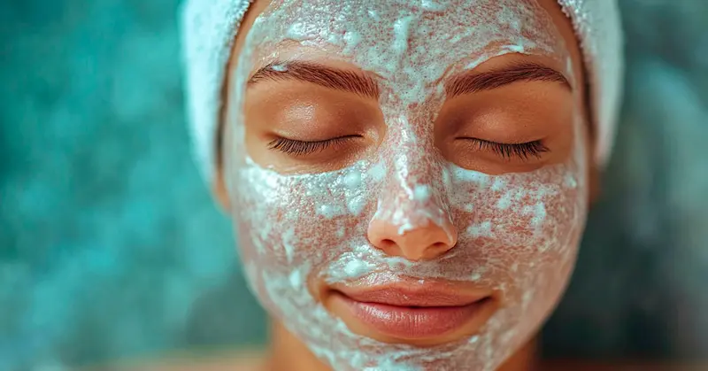
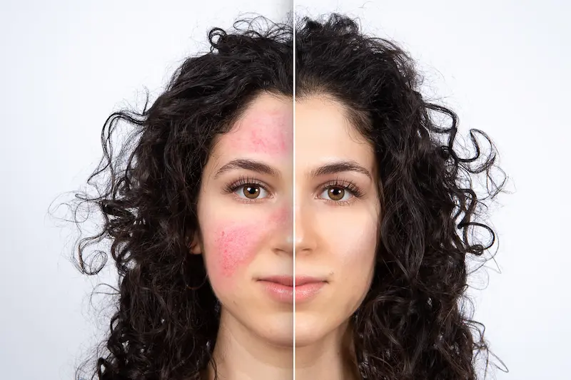
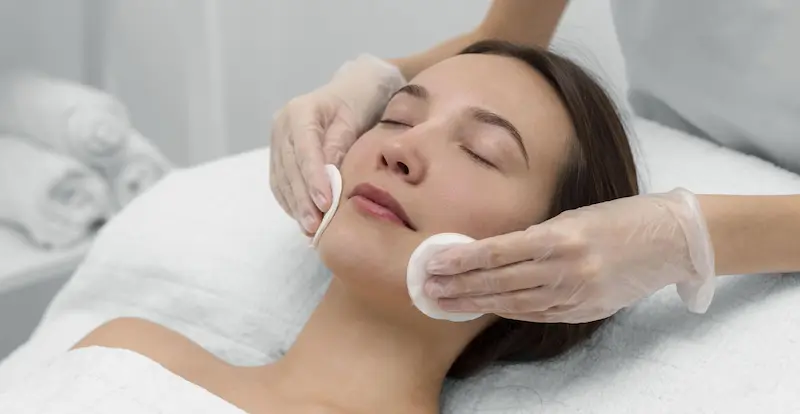
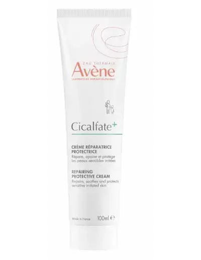
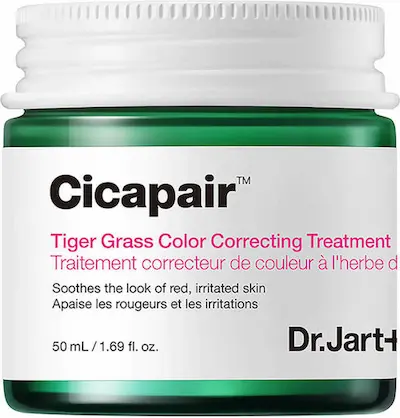
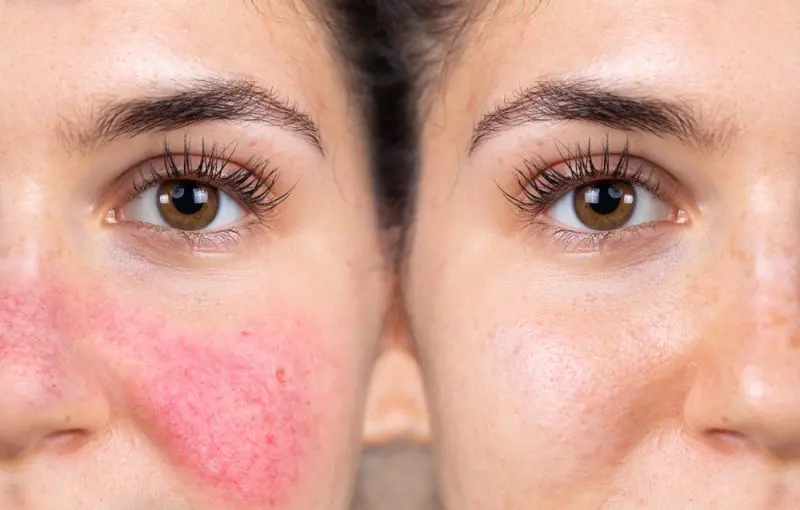

Recuperare SOS: componente calmante pentru protecția barierei cutanate deteriorateCe se întâmplă cu pielea după o exfoliere excesivă?
Iritația după peeling este un semnal direct al unei deteriorări critice a barierei de protecție. Când „exagerăm” cu acizii sau cu retinolul, pielea își pierde capacitatea de a reține umiditatea și de a se apăra împotriva bacteriilor. În locul strălucirii așteptate, apare o eritemă (roșeață) persistentă, care indică inflamarea straturilor profunde ale dermului.
În condițiile climatice din România, unde apa dură de la robinet din orașe precum București se combină cu aerul uscat de la calorifere iarna sau cu soarele arzător vara, pielea deteriorată devine complet lipsită de apărare. Fără o refacere de urgență, bariera „arsă” de peeling duce la sensibilitate cronică, apariția microfisurilor și hiperpigmentare.
Cauzele „incendiului” de pe față: stratul lipidic deteriorat
Principalul vinovat al disconfortului este distrugerea „cimentului” lipidic care leagă celulele pielii. Prin aceste breșe, umiditatea se evaporă instantaneu (TEWL), iar orice factor extern — de la apa obișnuită până la vântul rece — provoacă o arsură insuportabilă.
Starea de „over-peeling” este deosebit de periculoasă pentru locuitorii marilor orașe (București, Cluj, Iași). Aerul poluat și praful pătrund ușor în pielea neprotejată, provocând o cascadă de reacții inflamatorii. În acest moment, vasele de sânge devin extrem de fragile, ceea ce poate declanșa debutul cuperozei sau exacerbarea rozaceei. Acum, pielea ta nu are nevoie de „active”, ci de „materiale pentru reparații”.

Reguli SOS pentru salvarea pielii după acizi
Ingrediente pentru reabilitarea după peeling
| Ingredient | Acțiune în caz de „over-peeling” |
|---|---|
| Centella Asiatică (CICA) | Funcționează ca un „pansament biologic”: accelerează vindecarea microfisurilor și elimină senzația de arsură. |
| Pantenol (Provitamina B5) | Elimină instantaneu eritemul (roșeața) și hidratează profund pielea „arsă” de acizi. |
| Ceramide | Compensează lipsa de lipide, „re-lipind” bariera de protecție distrusă de exfoliere. |
| Apă Termală | Saturează pielea cu minerale, inhibă inflamația vaselor de sânge și reduce sensibilitatea. |

Cele mai bune produse pentru iritații după peeling


Ce este CATEGORIC interzis?
Cum redai sănătatea pielii pe termen lung?
Refacerea după acțiunea agresivă a acizilor durează între 14 și 28 de zile — atât cât durează ciclul de regenerare celulară. În această perioadă, rutina ta trebuie să fie minimalistă: curățare blândă, un ser reparator cu pantenol și o cremă de barieră cu ceramide.
Ține minte: o piele sănătoasă înseamnă un microbiom echilibrat. Imediat ce vei înceta să-ți „torturezi” fața cu peelinguri frecvente și te vei concentra pe protecție, vei observa că roșeața dispare, iar fața nu mai „arde” la fiecare atingere. După reabilitarea completă, reintrodu exfolianții treptat, începând cu concentrații minime.

Protocol de reabilitare: Dimineață vs Seară
După un peeling agresiv, pielea trebuie să treacă din regimul de „reînnoire” în regimul de vindecare intensivă și protecție.
| Momentul zilei | Etapa de îngrijire | De ce este necesar? |
|---|---|---|
| Dimineața | Curățare blândă (cremă-gel) + Ser Barrier + SPF 50 | Protejează pielea fotosensibilizată după peeling împotriva pigmentării și arsurilor, chiar și în zilele cu nori. |
| Seara | Spălare ultra-delicată + Balsam CICA (pantenol) | Activează procesele de regenerare celulară și elimină senzația de „față care arde” acumulată peste zi. |
| În timpul zilei | Apă termală / Mist cu pantenol | Hidratează și răcorește instantaneu pielea, calmând episoadele de arsură și strângere. |
| SOS-Care | Mască textilă sterilă (calmantă) | Ajutor de urgență în caz de edem sever sau roșeață critică după o exfoliere excesivă. |
Important pentru România: După exfoliere, pielea devine extrem de sensibilă la apa dură (în special în București și marile orașe). Încearcă să te speli cu apă plată sau fiartă și răcită în primele 3-5 zile, pentru ca clorul și sărurile să nu accentueze iritarea barierei deteriorate.
Factorii de stres urbani și pielea deteriorată
În mediul urban din România, praful și gazele de eșapament devin toxice pentru pielea cu bariera compromisă după peeling. Particulele fine de poluare (PM2.5) pătrund ușor prin „breșele” din epidermă, provocând micro-inflamații. Acest lucru poate face ca o exfoliere obișnuită după acizi să se transforme într-o dermatită persistentă.
Cheia unei recuperări reușite este crearea unei „a doua piei”. Utilizarea produselor ocluzive (balsamuri cu ceramide și zinc) creează un scut mecanic ce împiedică toxinele urbane și vântul uscat să perturbe procesul natural de vindecare. Reține: până când bariera nu este refăcută, îngrijirea ta trebuie să fie cât mai simplă și sterilă.
Întrebări frecvente despre recuperarea după peeling
Cât de repede trec senzația de arsură și roșeața după „over-peeling”?
Senzația inițială de căldură și disconfort se diminuează, de obicei, în decurs de 30–60 de minute după aplicarea unei creme CICA. Totuși, refacerea completă a epidermei și dispariția eritemului persistent (roșeața) durează între 7 și 14 zile, în funcție de profunzimea deteriorării barierei cutanate.
Pot folosi machiaj dacă pielea se descuamează după acizi?
În primele 48–72 de ore după un peeling agresiv, nu se recomandă utilizarea cosmeticelor decorative. Pigmenții și conservanții din produsele de machiaj pot pătrunde prin microfisuri în straturile profunde ale pielii, provocând reacții alergice sau inflamații secundare.
De ce pielea feței „arde” chiar și de la o cremă hidratantă obișnuită?
Acesta este un semn al unei bariere lipidice critic deteriorate. Când stratul protector este distrus de exfoliere, terminațiile nervoase devin expuse și reacționează la orice componentă. În această situație, trebuie să treceți temporar la produse farmaceutice sterile cu o compoziție minimalistă (de exemplu, Bioderma Cicabio sau gama Toleriane).
Când pot reveni la utilizarea retinolului sau a acizilor?
Revenirea la ingredientele active este permisă doar după încetarea completă a descuamării și dispariția sensibilității. De obicei, acest lucru se întâmplă după 2 săptămâni. Reintroduceți activele treptat, combinându-le cu creme reparatoare pentru a preveni un nou „șoc termic” al vaselor de sânge.